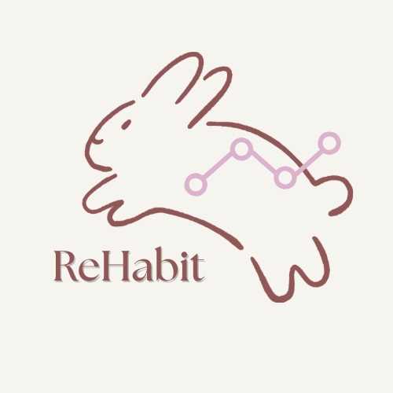

1. Pencatatan Kebiasaan
Pengguna dapat menambahkan kebiasaan yang ingin dilacak.
Bangun kebiasaan baik, sedikit demi sedikit.
ReHabit membantu membentuk kebiasaan baru dengan langkah kecil, pengingat, dan statistik sederhana.
ReHabit tak hanya membuat habit baru tetapi juga mempertahankan habitmu.
Pengguna dapat menambahkan kebiasaan yang ingin dilacak.
Pengingat otomatis untuk menyelesaikan kebiasaan.
Tampilan ringkas progres harian/mingguan, termasuk streak.
Form sederhana untuk menambah, mengubah, dan menghapus daftar kebiasaan.
Tambahkan kebiasaan yang ingin dibangun.
Set target harian atau pengingat.
Tandai kebiasaan saat selesai setiap hari.
Lihat progress dan pertahankan streak.
3yanisa@gmail.com